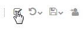

Using a Configuration Variable to Control a Process Flow
In this example, we demonstrate how a workflow can be adjusted
during runtime with the help of a configuration variable value.
Assuming a company has a workflow,
where they do not require a specific activity to be executed in a test
environment, but they do want it to be executed in production.
To achieve such a behavior, we create a model having a configuration variable.
If this variable is set to a specific value, the activity foreseen for
production only is executed, otherwise skipped. The variable
is checked via a transition condition in the model. Testing the example is
done in the Stardust Portal, where we change the variable in
the Configuration Variables view.
You can create the model as described in the following section,
or import the completed example model provided by Stardust.
Therefore download the following ZIP file containing the
configuration variables example model:
all-tutorials.zip
You find the model in folder config-variables.
Creating the Model
In a dynamic Web project designed to deploy Stardust
models to run in the Stardust Portal,
create a model, e.g. ProductionOrTestVarDemo.
For detailed information on creating dynamic Web projects
for usage with the Stardust Portal,
please refer to the
Rapid Application Development guide.
Proceed as follows:
Adding the Configuration Variable
To add the configuration variable:
- Open the model properties page.
- Click on Configuration Variables.
- Click Add.
- Click in the Name column and enter
the variable name Environment.
- Enter TEST as default value in the Default Value
column entry field.
- Optionally add a description.
Figure: Add variable Environment.
Please refer to chapter
Using Configuration Variables
in the Modeling Guide
for details on adding variables to a model.
Creating the Workflow
- Create a manual trigger followed by a manual activity
Starting Activity.
- Right-click the activity and select
Split Behavior > XOR.
- Create an activity named Activity Production Only.
This will be the activity to be performed in production mode only.
- Create another activity Continue
to be performed after the production activity or from the starting
activity directly.
- Add a role to the model and assign it as performer of
all activities and the manual trigger.
For detailed information on how to add roles and assign them,
please refer to chapter
Defining Roles and Organizations
of the Support Case Example.
- Create a connection from the split joint of activity
Starting Activity to activity
Activity Production Only and one to activity
Continue, as illustrated in the following
screenshot:

- Enter a condition transition to the transition
from the split joint to Activity Production Only
by double-clicking the transition line in the diagram.
- In the transition condition property page dialog, enter
the following Condition Expression:
"${Environment}" == "PRODUCTION";
To refer to the value of the variable, the variable name is escaped
as $"Environment".
This reference to the variable via the transition condition
is reflected in the Configuration Variables section of the model property page.
Open the model property page and switch to the Configuration
Variable section. In the References part,
the transition and its condition referencing to our Environment
variable are displayed.
Running the Workflow with Different Variable Values
Now we will test our workflow in the Stardust Portal
with different values of the configuration variable.
Running the Workflow in Test Mode
First we run the model workflow with the default value TEST.
- Start your server and deploy the model. For details on how to deploy a model,
please refer to the chapter
Deploying a Workflow Model
of the Support Case Example.
- Start the Stardust Portal as described in the chapter
Logging to the Stardust Portal of the
End User Handbook.
Login as administrator (motu/motu). You can use the Shift-F8 short key.
- Switch to the
Participant Manager View of the
Administration Perspective.
- Create a user and assign him to the role we added to the model.
For details on how to create a new user, refer to section
Creating a new User of chapter
Creating and Editing User Accounts of the
Stardust Portal documentation.
- Logout and login again as the new user.
- In the
Workflow Perspective, start the available process.
- Complete activity Starting Activity.

- Per default, the model is run in test mode as the default
value of the configuration variable is "TEST" (or different to "PRODUCTION").
Thus, the activity Activity Production Only is skipped
and activity Continue is opened.

Switching to Production Mode
To run the model workflow in production mode, we change the value
of our configuration variable to PRODUCTION.
Therefore we need to perform the following steps:
- Switch to the Configuration Variables view
in the Administration Perspective.
For details on this view, please refer to chapter
Viewing and Editing Configuration Variables of the
Stardust Portal guide.
- In the Value column, change the value of the variable to
"PRODUCTION".
- A red little star in the upper right corner of the Value
entry field indicates that the variable has been changed but not saved.
Click the Save icon
 in the
upper-right corner to save the new configuration variable value:
in the
upper-right corner to save the new configuration variable value:
- A dialog opens with the validation status of the configuration variable change.
- Click OK
- The red star now is no longer displayed, which indicates that the changed value has been saved.
- Now start the process again.
- Complete activity Starting Activity.
- The transition condition checks the value of the variable and
decides to run the activity foreseen for production. Thus, the next
activity opening is Activity Production Only.
- Completing this activity results in continuing with activity
Continue.
The value of the variable is stored in later versions of this
process model. In case you want to run the model again in test mode and skip the activity
for production, change the variable value to "TEST" accordingly.
{kind=link}